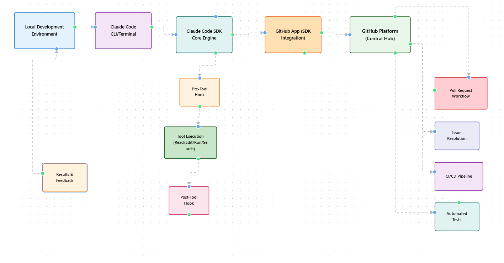
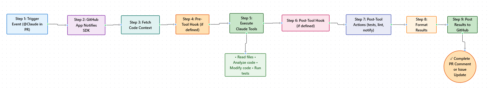

Exploring GitHub Integration and Hooks
Module 1 — Episode 7
Training:Claude Code - A Highly Agentic Coding Assistant
Course Level: Intermediate → Advanced
🎯 What You'll Learn
By the end of this episode, you will:
- ✅ Set up and configure the Claude Code GitHub integration
- ✅ Automate pull request reviews and issue resolution using Claude
- ✅ Implement and manage Claude Code hooks for pre- and post-tool execution
- ✅ Extend Claude Code’s functionality beyond the terminal into CI/CD workflows
🧭 Quick Overview
The Big Picture:This episode teaches how to connect Claude Code with GitHub for intelligent code reviews and automated issue resolution. You’ll also learn to use hooks—custom scripts that run before or after Claude Code tools—to extend automation and integrate with your development workflow.
What Problem Does This Solve?- Manual code reviews can miss subtle issues or style inconsistencies
- Developers often repeat tasks after tool execution (tests, linters, notifications)
- Integrating AI into existing GitHub workflows can be cumbersome
- Automated PR reviews and issue resolution in GitHub
- Continuous integration pipelines
- Custom automation for Claude Code operations (e.g., testing, linting, notifications)
🧱 Prerequisites & Background
You should already know:- Git and GitHub fundamentals (branches, pull requests, issues)
- Basic Claude Code command-line usage
- How to configure Claude Code project settings (
settings.local.json)
→ Start with [Episode 3: Working with Files and Tools in Claude Code]
🔑 Core Concepts Explained
Concept 1: GitHub Integration
Definition:A native link between Claude Code and GitHub that enables AI-assisted pull request reviews, issue resolution, and automated code analysis directly in GitHub.
Why It Matters:This turns Claude into a fully integrated teammate—reviewing code, fixing issues, and proposing pull requests automatically.
When To Use:- During PR reviews to get AI feedback
- To auto-generate fixes from GitHub issues
- When you want to extend Claude Code into your CI/CD pipeline
Concept 2: Claude Code SDK
Definition:A software development kit enabling Claude Code to operate outside the terminal—used by the GitHub integration to handle pull requests and issues.
Why It Matters:It decouples Claude’s capabilities from the CLI, allowing integration with external systems like GitHub Actions or custom services.
When To Use:- When building custom workflows or integrations
- For enterprise automation across repositories
Concept 3: Hooks
Definition:Event-driven scripts that trigger before or after Claude Code executes a tool. Hooks can modify behavior, run additional commands, or block execution.
Why It Matters:Hooks allow developers to embed Claude Code into broader workflows—running tests, sending notifications, or enforcing policies automatically.
When To Use:- To automate post-tool actions (e.g., run tests after file edits)
- To prevent tool execution under certain conditions
- To integrate Claude Code with external systems or pipelines
🏗️ Architecture & Flow Diagrams
System Diagram
 What This Shows:Claude Code acts as a bridge between your local development environment and GitHub. The GitHub App communicates with Claude’s SDK, which handles tool execution, runs hooks, and posts results back into GitHub.
Workflow Sequence
 Key Takeaway:Hooks can wrap around any Claude Code tool execution, adding automation or validation before and after tool runs.
⚙️ Technical Deep Dive
How It Works: Step-by-Step
Phase 1: Setup & Initialization1. Install the GitHub integration:
/install-GitHub-app
2. Authenticate via browser when prompted.
3. Select the repository to install the Claude GitHub App.
4. Configure workflows for PR reviews and issue handling.
Phase 2: Execution & Processing1. Tag Claude in a PR or issue (@Claude).
2. Claude fetches the relevant code or issue context.
3. Executes analysis or code modification.
4. Uses hooks (if defined) to run pre/post actions.
Phase 3: Output & Integration1. Claude posts review comments or opens a new PR.
2. Optional PostToolUse hooks trigger (e.g., run say "All done!").
3. Developer merges PR and syncs local repository.
Why This Design Works
Underlying Principles:- Agentic Autonomy: Claude acts as a self-sufficient collaborator.
- Event-Driven Extensibility: Hooks enable dynamic behavior without modifying core code.
- Seamless Integration: GitHub workflows mirror local Claude Code operations.
- Hooks only execute when explicitly configured.
- GitHub integration respects repository permissions.
- All Claude actions are logged via GitHub Actions for transparency.
✅ When To Use This Feature
Ideal Use Cases
✅ Perfect For:- Teams using GitHub for collaboration and CI/CD
- Automating repetitive code reviews
- Enforcing code quality and style consistency
- 50–70% faster PR turnaround time
- Reduced human review overhead
- Continuous AI oversight on code quality
Anti-Patterns: When NOT To Use
❌ Avoid When:- Working on sensitive or proprietary code without clear permission settings
- You need deterministic, human-only reviews
- Hooks execute unverified shell commands (security risk)
- Running arbitrary shell commands in hooks without sanitization
- Forgetting to authenticate the GitHub App
- Overlapping hook matchers causing redundant executions
🔧 Practical Implementation Guide
Step 1: Install GitHub Integration
/install-GitHub-app
Follow the browser prompt to authenticate and select your repository.
What This Does:Installs the Claude GitHub App and sets up workflows for PR and issue automation.
Step 2: Configure Workflows
Claude automatically creates YAML files in .github/workflows/, e.g.:
name: Claude Code Review
on:
pull_request:
types: [opened, synchronize]
jobs:
review:
runs-on: ubuntu-latest
steps:
- uses: anthropic/claude-code-review@v1
Defines when and how Claude reviews code changes.
Step 3: Add Hooks
In your settings.local.json:
{
"hooks": {
"PostToolUse": [
{
"matcher": ["Read", "Grep"],
"command": "say 'All done!'"
}
]
}
}
Executes the say command whenever the Read or Grep tool completes.
💡 Practical Tips & Tricks
Pro Tip 1: Automate Tests with Hooks
Technique:Add a PostToolUse hook to run your test suite automatically after edits.
"command": "npm test"
After Claude modifies or generates code.
Pro Tip 2: Prevent Risky Commands
Technique:Use PreToolUse hooks to block sensitive operations.
"command": "exit 1",
"matcher": ["Delete"]
In production repositories or shared environments.
Pro Tip 3: Enhance PR Reviews
Technique:Customize the review prompt in .github/workflows/claude-review.yml.
More context-aware and organization-specific feedback.
� GitHub Actions Setup
Quickest Way to Enable GitHub Integration
# In Claude Code terminal, run:
/install-github-app
# Follow the prompts to authorize Claude Code
# Once installed, you can mention @claude in GitHub PRs and issues
@claude implement the feature described above→ Claude creates a PR@claude review this code→ Claude reviews your changes@claude create a test file for this→ Claude generates tests@claude fix this bug→ Claude diagnoses and fixes issues
- All Claude Code operations happen within PRs and conversation threads
- Requires the repo to be connected to your GitHub account
- Check full documentation: Claude Code GitHub Actions
🪝 Hooks - Automate Your Workflow
Definition: Shell commands executed at specific lifecycle events in Claude Code. Lifecycle Events:before_tool_use- Before Claude executes any toolafter_tool_use- After Claude executes a toolbefore_response- Before Claude sends a responseafter_subagent_task- When a subagent completes a task
Setup Hooks
1. Create .claude/hooks.yaml in your project:
hooks:
after_tool_use:
- name: "Run tests after edits"
command: "npm test"
condition: "modified_files" # Only run if files were modified
after_response:
- name: "Auto-commit changes"
command: "git add -A && git commit -m 'Claude Code changes'"
condition: "has_changes"
2. Alternatively, define hooks as markdown in .claude/hooks.md:
# After Tool Use Hook
Run linting and tests after Claude modifies files:
npm run lint
npm test
3. Verify hooks are active:
/hooks # In Claude Code terminal
### Example: Auto-format and Test After Edits
after_tool_use:
- name: "Format and validate"
black . --quiet # Python formatting
npm run format # JS formatting
npm test # Run tests
**Additional Resources:**
- Full hooks guide: [Hooks Documentation](https://docs.anthropic.com/en/docs/claude-code/hooks-guide)
- Command reference: [Hooks Reference](https://docs.anthropic.com/en/docs/claude-code/hooks)
- Video tutorial: [Claude Code In Action - Hooks](https://anthropic.skilljar.com/claude-code-in-action/312000)
## �🚀 Real-World Examples
### Example 1: Automated PR Review
**Context:**
A developer submits a PR for a new feature.
**Claude Code Approach:**
@Claude please review this PR for security and performance.
**Result:**
Claude analyzes the code, posts detailed comments, and suggests improvements.
### Example 2: Auto-Fix GitHub Issue
**Context:**
An issue requests reverting a header change.
**Claude Code Approach:**
Tag Claude in the issue:
@Claude fix this issue
**Result:**
Claude modifies the code, opens a PR with the fix, and reviews its own changes.
## 🤔 Common Questions & Troubleshooting
### Q: Why doesn’t the GitHub app respond to my PR?
**A:** Ensure it’s installed on the correct repository and that Claude is tagged in the PR.
### Q: My hook isn’t running. Why?
**A:** Verify the hook is defined in `settings.local.json` and that the matcher matches the tool name exactly.
### Q: Can hooks run multiple commands?
**A:** Yes, chain them using shell syntax or define multiple hook entries.
## 📊 Performance & Optimization
### Context Window Management
- Hooks don’t consume Claude context.
- GitHub reviews use efficient summaries to minimize token usage.
### Speed Optimization
- Limit hook matchers to specific tools.
- Avoid long-running shell commands in PostToolUse hooks.
### Cost Considerations
- GitHub reviews consume API tokens proportional to PR size.
- Optimize by batching smaller commits.
## 🔗 Related Topics & Next Steps
**You Should Also Learn About:**
- [Episode 8: Using Claude Code in Jupyter Notebooks]
- [Episode 5: Multi-Agent Collaboration in Claude Code]
**Previous Episodes to Review:**
- [Episode 6: Managing Worktrees and Git Operations]
## 📌 Key Takeaways
1. **Claude GitHub Integration** turns Claude into an active code reviewer.
2. **Hooks** extend Claude Code’s automation before and after tool execution.
3. **Customization** through YAML and JSON enables fine-grained control.
4. **Security awareness** is critical when running shell commands via hooks.
## 🎓 Quick Reference
### Command Cheat Sheet
| Purpose | Command | When to Use |
|----------|----------|-------------|
| Install GitHub integration | `/install-GitHub-app` | To connect Claude Code with GitHub |
| Manage hooks | `/hooks` | To configure pre/post tool actions |
| Resume previous session | `claude --resume` | To continue prior conversation |
| Trigger PR review | Tag `@Claude` | In GitHub PR comments |
### Keyboard Shortcuts
- `Shift+Tab` twice – View Claude’s plan before execution
- `Ctrl+C` – Cancel running command
- `Escape` – Exit current Claude Code prompt
### Common Prompts
@Claude please review this PR for code quality and security.
@Claude fix this issue by reverting the header to its previous state.
`
🔐 Security & Best Practices
Privacy Considerations:- Hooks execute locally; review commands before enabling.
- GitHub integration uses OAuth and respects repository permissions.
- Always review Claude’s PRs before merging.
- Use hooks for validation, not for destructive actions.
- Store hook definitions in version control.
- Document integration steps in your team’s
CLAUDE.md.
📚 Extra Resources
Official Documentation: Additional Learning:- Anthropic Blog: Automating Code Reviews with Claude Code
- GitHub Actions Docs: Custom Workflow Automation
⭐ Conclusion
What You've Mastered:- Installing and authenticating the Claude GitHub App
- Automating PR reviews and issue resolution
- Creating and managing Claude Code hooks
You now have Claude working both locally and in GitHub—reviewing, fixing, and automating your development pipeline.
Your Next Challenge:Build a custom hook that runs tests automatically after Claude edits code, and integrate it into your CI/CD pipeline.
Pro Tip for Long-Term Mastery:Treat Claude as a full-time collaborator—extend it with hooks, review its work, and continuously evolve your automation workflows.